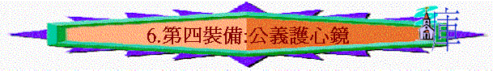

「所以要站穩了，用真理當作帶子束腰，用公義當作護心鏡遮胸，」弗6:14
一.護心的重要
1.提防撒旦的攻擊
「吃晚飯的時候，魔鬼已將賣耶穌的意思放在西門的兒子加略人猶大心裡。」約13:2
～撒但可以將不好的意念放在人心中
2.一生果效的關鍵
「你要保守你心，勝過保守一切（或作：你要切切保守你心），因為一生的果效是由心發出。」箴4:23
～一生的果效是由心發的，心影响個人的行為及價值觀念，所以我們要保守我們的心
二.公義的意思
「因為不知道神的義，想要立自己的義，就不服神的義了。」羅10:3
「但你們得在基督耶穌裡，是本乎神，神又使他成為我們的智慧、公義、聖潔、救贖。」林前1:30
「如經上所記：他施捨錢財，賙濟貧窮；他的仁義存到永遠。」林後9:9
～和合本又譯「義」、「仁義」、「公義」，英文 “righteousness”
1.沒有罪惡
「你喜愛公義，恨惡罪惡；所以神，就是你的神，用喜樂油膏你，勝過膏你的同伴；」來1:9
2.與惡相反
「豈不曉得你們獻上自己作奴僕，順從誰，就作誰的奴僕嗎？或作罪的奴僕，以至於死；或作順命的奴僕，以至成義。」羅6:16
3.有真理的
「並且穿上新人；這新人是照著神的形像造的，有真理的仁義和聖潔。」弗4:24
4.是光明的
「光明所結的果子就是一切良善、公義，誠實。」弗5:9
5.是神的義
「因為不知道神的義，想要立自己的義，就不服神的義了。」羅10:3
「我告訴你們，你們的義若不勝於文士和法利賽人的義，斷不能進天國。」」太5:20
～是神眼中看為的義，是勝過世人的義，合乎神的標準
三.保守的內容
1.在判斷上保守自己的心有公正
「因為他已經定了日子，要藉著他所設立的人按公義審判天下，並且叫他從死裡復活，給萬人作可信的憑據。」」徒17:31
「保羅講論公義、節制，和將來的審判。腓力斯甚覺恐懼，說：「你暫且去吧，等我得便再叫你來。」」徒24:25
～撒但有時想我們在判斷上有偏差出現，不公平，不公正的情況，我們要常保守自己的心滿有公正
2.在生命上保守自己的心有正直
「你們要先求他的國和他的義，這些東西都要加給你們了。」太6:33
「我因你們肉體的軟弱，就照人的常話對你們說。你們從前怎樣將肢體獻給不潔不法作奴僕，以至於不法；現今也要照樣將肢體獻給義作奴僕，以至於成聖。」羅6:19
「但你這屬神的人要逃避這些事，追求公義、敬虔、信心、愛心、忍耐、溫柔。」提前6:11
～我們從罪惡裏被拯救出來，我們要保守自己的心不再犯罪，常有神的義，以神的標準行正直及正確的事
3.在身份上保守自己的心信有義
「神使那無罪（無罪：原文作不知罪）的，替我們成為罪，好叫我們在他裡面成為神的義。」林後5:21
「律法的總結就是基督，使凡信他的都得著義。」羅10:4
～撒旦時常會控告我們，我們要知道自己因信已稱義了
四.得義的方法
1.聖經
「聖經都是神所默示的（或作：凡神所默示的聖經），於教訓、督責、使人歸正、教導人學義都是有益的，」提後3:16
2.信主
「並且得以在他裡面，不是有自己因律法而得的義，乃是有信基督的義，就是因信神而來的義，」腓3:9
3.管教
「凡管教的事，當時不覺得快樂，反覺得愁苦；後來卻為那經練過的人結出平安的果子，就是義。」來12:11